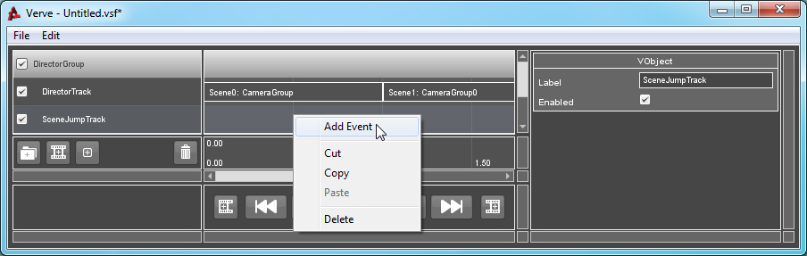

Tutorial : Scenes and Scene Jumping
Objects: VSceneJumpTrack, VSceneJumpEvent
A Scene Jump Event will shift the position of the root Controller upon triggering. Scenes are defined in the sequences Director Track. If no Director Track exists, or the scene you are attempting to jump to is invalid, then no jump will occur.
You can use this Event type to loop sections of your sequence or create interactive or branched sequences.
How to Use:
To use Scene Jump events, you must first add a VSceneJumpTrack to your sequence's Director Group.If you are unsure of how to create or validate a Group, click here.
You must also set up your sequence to use Scene Labels. Scenes are defined by the labels given to Director Events in your sequence. When your Director cuts or changes camera views, you can define the segment as a new Scene. For more information, see the documentation for the Director Group.
Right-Click on the Group, go to "Add Track" and select "Add Scene Jump Track".
Right-Click on the Track and select "Add Event".

Select the newly created Event. The Property List window will refresh and inspect the Event. To change which Scene you would like to jump to once the Event has been triggered, select a valid Scene from the dropdown menu for the Event's "Target" property.